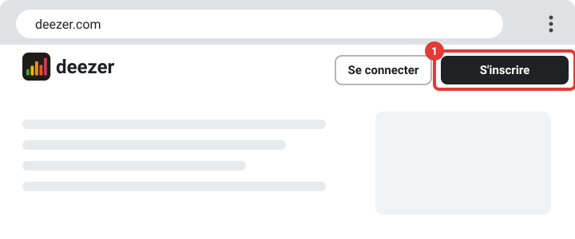
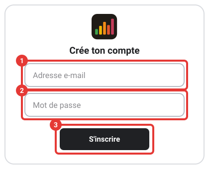
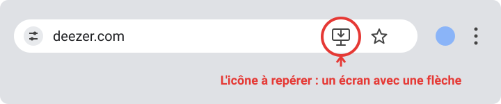
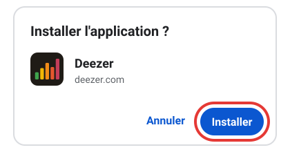
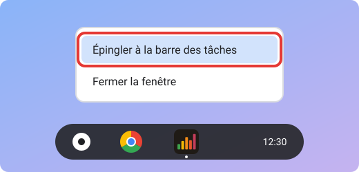
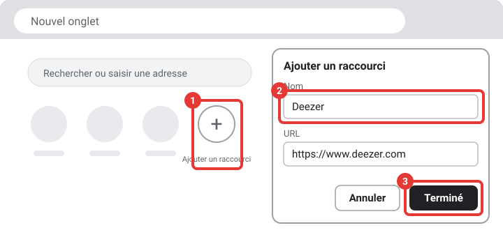

Utiliser Deezer dans le navigateur
Écoute Deezer directement dans ton navigateur, sans rien installer. Tu peux ensuite l'installer comme une application et l'ajouter aux raccourcis de Chrome. Les images sont des schémas : les cadres rouges numérotés montrent où cliquer, mais l'aspect exact du site peut un peu changer.
-
Ouvre Deezer
Clique sur le bouton ci-dessous : Deezer s'ouvre dans un nouvel onglet.
Ouvrir Deezer -
Clique sur « S'inscrire »
En haut à droite de la page, clique sur « S'inscrire » (cadre rouge n°1) pour créer un compte gratuit. Tu en as déjà un ? Clique plutôt sur « Se connecter » à côté.

-
Crée ton compte
Choisis comment t'inscrire : avec une adresse e-mail, ou avec un compte Google, Facebook ou Apple. Pour l'e-mail, écris ton adresse (cadre n°1) et un mot de passe (cadre n°2), puis clique sur « S'inscrire » (cadre n°3).

Deezer peut aussi te demander ton prénom et ta date de naissance, puis t'envoyer un e-mail de confirmation : ouvre-le et clique sur le lien. Note ton mot de passe.
-
Choisis ta musique
Utilise la barre « Rechercher » en haut de la page pour trouver un titre, un album ou un artiste, puis clique sur le bouton de lecture (le triangle ▶). Le menu à gauche donne accès à tes favoris et à tes playlists.
La version gratuite de Deezer contient de la publicité et limite certaines fonctions ; l'abonnement Premium lève ces limites. Si l'abonnement n'est pas à toi, demande l'accord de la personne qui paie. Sur un ordinateur qui n'est pas le tien, déconnecte-toi à la fin : clique sur ton profil en haut à droite, puis sur « Se déconnecter ».
Bonus : installer Deezer comme une vraie application Chrome et Chrome OS
Sur Chrome (ordinateur ou Chromebook), Deezer peut s'ouvrir dans sa propre fenêtre, avec son icône. À faire seulement sur ton propre appareil.
-
Ouvre Deezer dans Chrome
Ouvre le navigateur Google Chrome, va sur deezer.com et connecte-toi.
-
Repère l'icône d'installation
Tout à droite de la barre d'adresse (la longue barre en haut, où est écrit « deezer.com »), cherche un petit écran d'ordinateur avec une flèche vers le bas.

Tu ne la vois pas ? Attends quelques secondes, ou ouvre le menu (les trois points en haut à droite de Chrome, cadre n°1), puis « Diffuser, enregistrer et partager » (cadre n°2), puis « Installer la page en tant qu'application… » (cadre n°3). Le nom peut varier selon ta version.

Si cette ligne n'existe pas, choisis plutôt « Créer un raccourci… » et coche « Ouvrir dans une fenêtre » : le résultat est le même pour la suite.
-
Clique sur « Installer »
Une petite fenêtre s'ouvre : clique sur le bouton bleu « Installer ».

Si Deezer est déjà installé, l'icône affiche « Ouvrir dans l'application » : clique dessus pour l'ouvrir.
-
Deezer s'ouvre dans sa propre fenêtre
Sa petite icône apparaît dans la barre des tâches, la barre qui se trouve en bas de l'écran.
-
Épingle l'application à la barre des tâches
Fais un clic droit (ou touche le pavé tactile avec deux doigts) sur l'icône Deezer dans la barre des tâches, puis clique sur « Épingler à la barre des tâches ».

Tu pourras ouvrir Deezer en un clic, sans passer par Chrome.
Bonus : ajouter Deezer aux raccourcis de Chrome
Les raccourcis sont les petites pastilles sous la barre de recherche, quand tu ouvres un nouvel onglet. Un clic dessus et Deezer s'ouvre.
-
Ouvre un nouvel onglet
Dans Chrome, appuie sur Ctrl + T, ou clique sur le petit + à droite des onglets, tout en haut de la fenêtre.
-
Clique sur « Ajouter un raccourci »
Sous la barre de recherche, clique sur le rond avec un + (cadre n°1). Une fenêtre s'ouvre : écris Deezer dans « Nom » (cadre n°2) et https://www.deezer.com dans « URL », puis clique sur « Terminé » (cadre n°3).

Tu ne vois pas le rond + ? En bas à droite de la page, clique sur « Personnaliser Chrome », puis sur « Raccourcis », et choisis « Mes raccourcis ».
-
Vérifie
Ouvre un nouvel onglet : la pastille Deezer apparaît à côté des autres. Pour la retirer plus tard, passe la souris dessus, clique sur les trois points qui apparaissent, puis sur « Supprimer ».